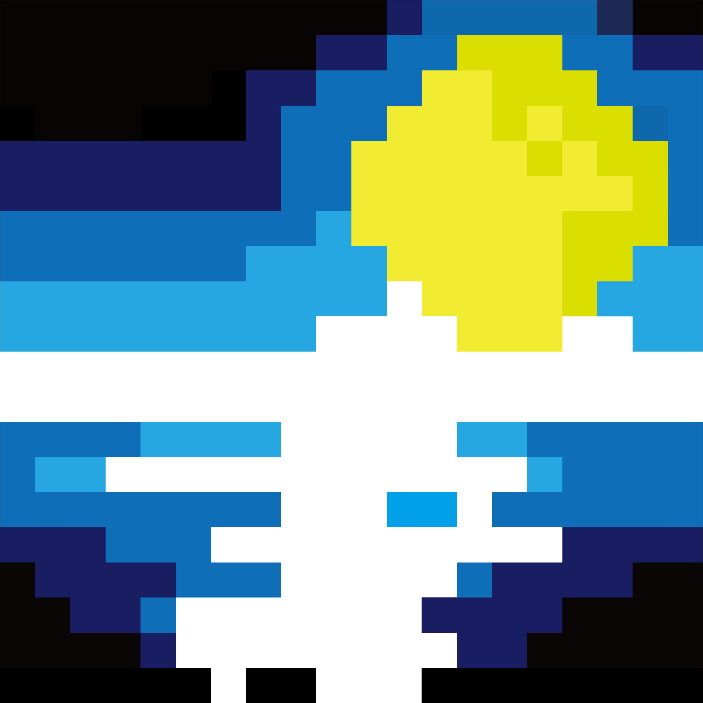

「Pixel Practice」
授業課題 ピクセルアート

Overview
- 課題制作 制作全般
- 制作時期：2025年 11月
- 使用ツール：Illustrator
- 設定：200mm×200mm枠を10mm×10mmの格子に分割
- 図形条件：10mm×10mmの格子400個
- 着彩条件：線なし、全マスに着彩 Max16色
Concept
本作は、ピクセル表現を用いて形や配色、画面構成の基礎を学ぶことを目的に制作した作品です。 限られたマス目の中でモチーフを成立させるため、情報を削ぎ落とし、特徴的な要素のみを残すことを意識しました。 また、色数を抑えることで全体の印象が整理され、視認性やバランスがどのように変化するかを検証しています。 単純な構成でありながらも、配置や比率によって印象が左右される点に、ピクセル表現ならではの難しさと面白さを感じました。